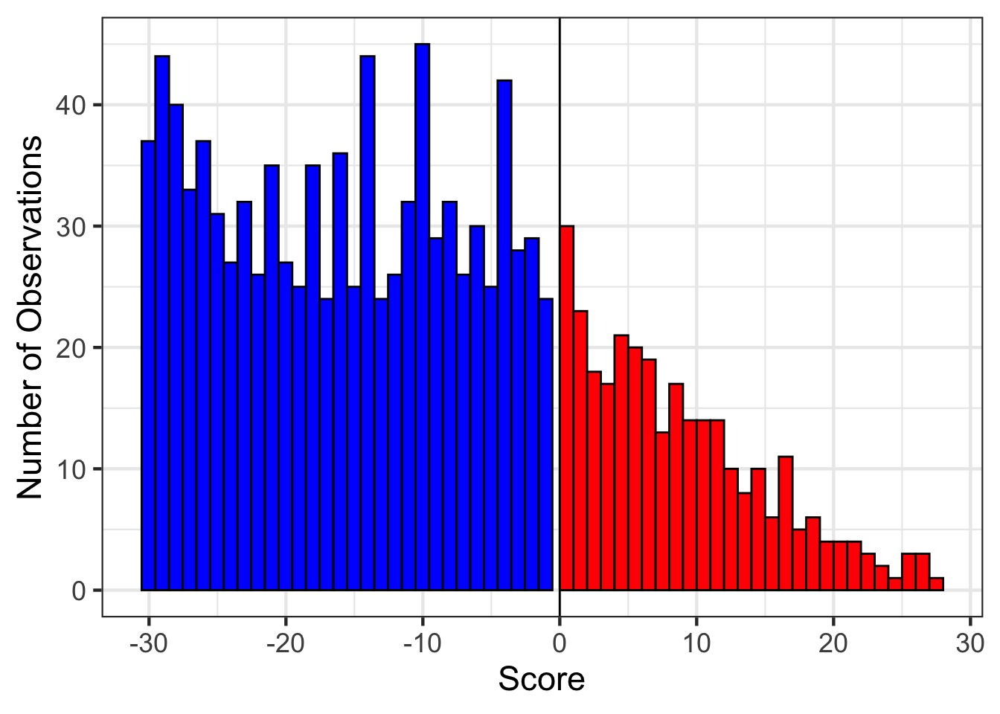
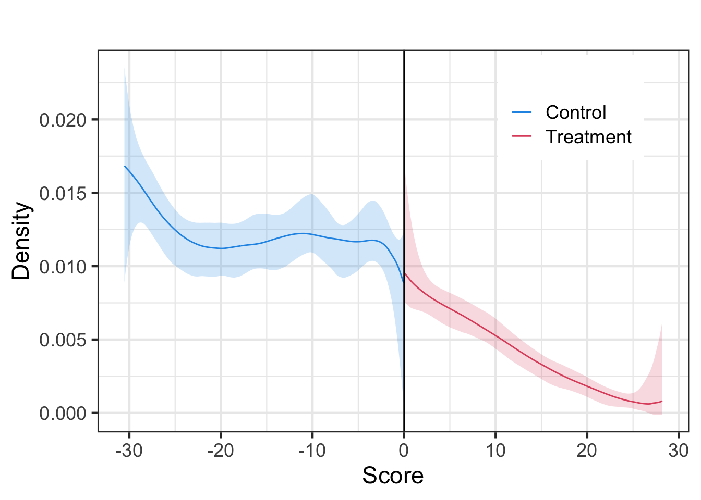
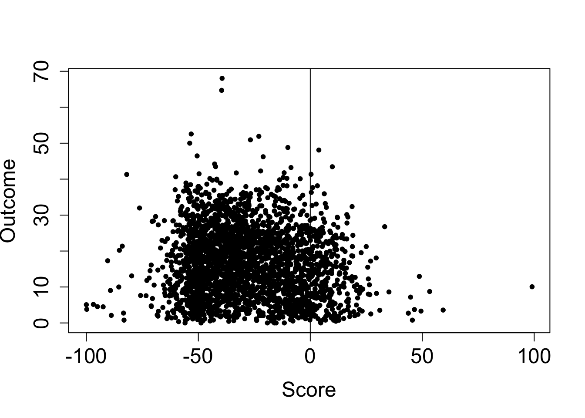
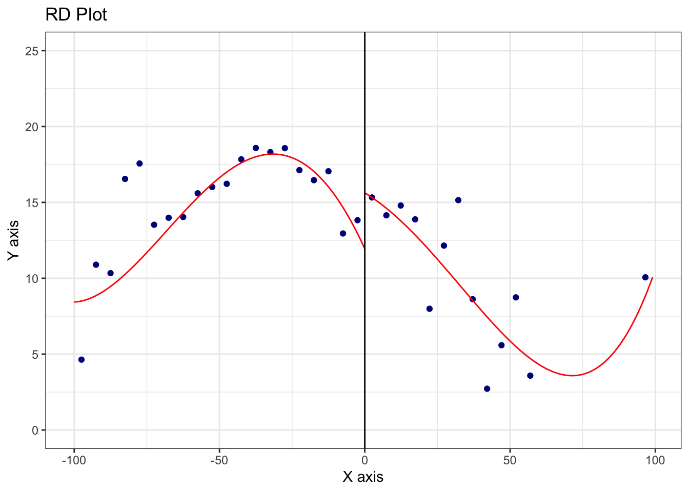
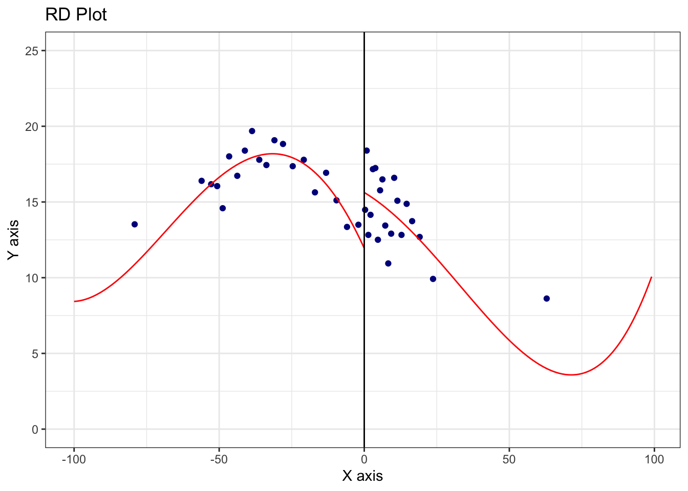

Meyersson (2014) - “Islamic Rule and the Empowerment of the Poor and Pious”
In this lab, we will illustrate how to conduct RD analysis with the rdrobust packages. The data comes from Meyersson (2014), and can be downloaded from: https://github.com/rdpackages-replication/CIT_2020_CUP/blob/master/CIT_2020_CUP_polecon.dta. Note that all the codes in this R file can be found from Cattaneo et al. (2019), which is a very nice handbook on the practical guide of running RD analysis.
Meyersson (2014) studies the effect of electing Islamic party on women’s education. The variables in the datasets are:
Y - educational attainment of women, measured as the percentage of women aged 15 to 20 in 2000 who had completed high school by 2000
X - vote margin obtained by the Islamic party in the 1994 Turkish mayoral elections, measured as the vote percentage obtained by the Islamic party minus the vote percentage obtained by its strongest secular party opponent.
T - electoral victory of the Islamic party in 1994
lpop1994 - Log Population in 1994
partycount - Number of Parties Receiving Votes in 1994
vshr_islam1994 - Islamic Vote Percentage in 1994
i89 - Islamic Mayor in 1989
merkezp - Province Center Indicator
merkezi - District Center Indicator
# load data from Meyersson (2014, ECTA)meyersson_2014ecta <-read_dta("meyersson_2014ecta.dta")# specify outcome, running variable, and treatment variableY <- meyersson_2014ecta$YX <- meyersson_2014ecta$XT <- meyersson_2014ecta$T# Analyzing the running variablemeyersson_2014ecta %>%group_by(T) %>%summarize(count =n(),vore_share =mean(X))
# A tibble: 2 × 3
T count vore_share
<dbl> <int> <dbl>
1 0 2314 -33.4
2 1 315 10.3
RD validity tests
The first validity test is to test whether or not the density of the running variable is continuous at the cutoff. The idea is that if people can manipulate the running variable to sort themselves to a side where they expect benefits, we would observe discontinuity of the density of the running variables at the cutoff. In Meyersson (2014), we fail to reject the null that there is a manipulation of running variable.
Running variable test
# test H0: the density of the running variable is continuous at the cutoffout <-rddensity(X)summary(out)
Manipulation testing using local polynomial density estimation.
Number of obs = 2629
Model = unrestricted
Kernel = triangular
BW method = estimated
VCE method = jackknife
c = 0 Left of c Right of c
Number of obs 2314 315
Eff. Number of obs 965 301
Order est. (p) 2 2
Order bias (q) 3 3
BW est. (h) 30.539 28.287
Method T P > |T|
Robust -1.3937 0.1634
Warning in summary.CJMrddensity(out): There are repeated observations. Point
estimates and standard errors have been adjusted. Use option massPoints=FALSE
to suppress this feature.
# plot histogram of running variablebw_left <-as.numeric(rddensity(X)$h[1])bw_right <-as.numeric(rddensity(X)$h[2])tempdata <-as.data.frame(X)colnames(tempdata) =c("v1")plot2 <-ggplot(data=tempdata, aes(tempdata$v1)) +theme_bw(base_size =17) +geom_histogram(data = tempdata, aes(x = v1, y= ..count..), breaks =seq(-bw_left, 0, 1), fill ="blue", col ="black", alpha =1) +geom_histogram(data = tempdata, aes(x = v1, y= ..count..), breaks =seq(0, bw_right, 1), fill ="red", col ="black", alpha =1) +labs(x ="Score", y ="Number of Observations") +geom_vline(xintercept =0, color ="black")plot2
Warning: The dot-dot notation (`..count..`) was deprecated in ggplot2 3.4.0.
ℹ Please use `after_stat(count)` instead.

# plot the density of the running variableest1 <-lpdensity(data = X[X <0& X >=-bw_left], grid =seq(-bw_left, 0, 0.1), bwselect ="IMSE",scale =sum(X <0& X >=-bw_left) /length(X))est2 <-lpdensity(data = X[X >=0& X <= bw_right], grid =seq(0, bw_right, 0.1), bwselect ="IMSE", scale =sum(X >=0& X <= bw_right) /length(X))plot1 <-lpdensity.plot(est1, est2, CIshade =0.2, lcol =c(4, 2), CIcol =c(4, 2), legendGroups =c("Control", "Treatment")) +labs(x ="Score", y ="Density") +geom_vline(xintercept =0, color ="black") +theme_bw(base_size =17) +theme(legend.position =c(0.8, 0.85))plot1

Covariates variation test
The other RD validity test is to test whether or not pre-treatment covariates vary smoothly at the threshold. The idea is that if individuals cannot perfectly manipulate the running variable near the threshold, then, there should be no systematic differences on pre-treatment covariates around the threshold.
# Log Population in 1994out <-rdrobust(meyersson_2014ecta$lpop1994, X)summary(out)
Sharp RD estimates using local polynomial regression.
Number of Obs. 2629
BW type mserd
Kernel Triangular
VCE method NN
Number of Obs. 2314 315
Eff. Number of Obs. 400 233
Order est. (p) 1 1
Order bias (q) 2 2
BW est. (h) 13.320 13.320
BW bias (b) 21.368 21.368
rho (h/b) 0.623 0.623
Unique Obs. 2311 315
=============================================================================
Method Coef. Std. Err. z P>|z| [ 95% C.I. ]
=============================================================================
Conventional 0.012 0.278 0.045 0.964 [-0.532 , 0.557]
Robust - - 0.001 0.999 [-0.644 , 0.645]
=============================================================================
# Number of Parties Receiving Votes in 1994out <-rdrobust(meyersson_2014ecta$partycount, X)summary(out)
Sharp RD estimates using local polynomial regression.
Number of Obs. 2629
BW type mserd
Kernel Triangular
VCE method NN
Number of Obs. 2314 315
Eff. Number of Obs. 373 223
Order est. (p) 1 1
Order bias (q) 2 2
BW est. (h) 12.166 12.166
BW bias (b) 20.064 20.064
rho (h/b) 0.606 0.606
Unique Obs. 2311 315
=============================================================================
Method Coef. Std. Err. z P>|z| [ 95% C.I. ]
=============================================================================
Conventional -0.168 0.478 -0.351 0.726 [-1.105 , 0.769]
Robust - - -0.429 0.668 [-1.357 , 0.869]
=============================================================================
# Islamic Vote Percentage in 1994out <-rdrobust(meyersson_2014ecta$vshr_islam1994, X)summary(out)
Sharp RD estimates using local polynomial regression.
Number of Obs. 2629
BW type mserd
Kernel Triangular
VCE method NN
Number of Obs. 2314 315
Eff. Number of Obs. 430 238
Order est. (p) 1 1
Order bias (q) 2 2
BW est. (h) 13.940 13.940
BW bias (b) 22.475 22.475
rho (h/b) 0.620 0.620
Unique Obs. 2311 315
=============================================================================
Method Coef. Std. Err. z P>|z| [ 95% C.I. ]
=============================================================================
Conventional 0.603 1.479 0.408 0.683 [-2.296 , 3.503]
Robust - - 0.370 0.711 [-2.794 , 4.095]
=============================================================================
# Islamic Mayor in 1989out <-rdrobust(meyersson_2014ecta$i89, X)summary(out)
Sharp RD estimates using local polynomial regression.
Number of Obs. 1908
BW type mserd
Kernel Triangular
VCE method NN
Number of Obs. 1683 225
Eff. Number of Obs. 269 149
Order est. (p) 1 1
Order bias (q) 2 2
BW est. (h) 11.783 11.783
BW bias (b) 20.559 20.559
rho (h/b) 0.573 0.573
Unique Obs. 1681 225
=============================================================================
Method Coef. Std. Err. z P>|z| [ 95% C.I. ]
=============================================================================
Conventional 0.053 0.067 0.800 0.424 [-0.077 , 0.184]
Robust - - 0.967 0.333 [-0.077 , 0.228]
=============================================================================
# Province Center Indicatorout <-rdrobust(meyersson_2014ecta$merkezp, X)summary(out)
Sharp RD estimates using local polynomial regression.
Number of Obs. 2629
BW type mserd
Kernel Triangular
VCE method NN
Number of Obs. 2314 315
Eff. Number of Obs. 358 216
Order est. (p) 1 1
Order bias (q) 2 2
BW est. (h) 11.557 11.557
BW bias (b) 18.908 18.908
rho (h/b) 0.611 0.611
Unique Obs. 2311 315
=============================================================================
Method Coef. Std. Err. z P>|z| [ 95% C.I. ]
=============================================================================
Conventional 0.029 0.037 0.788 0.431 [-0.044 , 0.103]
Robust - - 0.511 0.609 [-0.064 , 0.109]
=============================================================================
# District Center Indicatorout <-rdrobust(meyersson_2014ecta$merkezi, X)summary(out)
Sharp RD estimates using local polynomial regression.
Number of Obs. 2629
BW type mserd
Kernel Triangular
VCE method NN
Number of Obs. 2314 315
Eff. Number of Obs. 394 230
Order est. (p) 1 1
Order bias (q) 2 2
BW est. (h) 13.033 13.033
BW bias (b) 20.764 20.764
rho (h/b) 0.628 0.628
Unique Obs. 2311 315
=============================================================================
Method Coef. Std. Err. z P>|z| [ 95% C.I. ]
=============================================================================
Conventional -0.067 0.089 -0.757 0.449 [-0.241 , 0.107]
Robust - - -0.735 0.462 [-0.285 , 0.130]
=============================================================================
Using RD Plots to Present the Resutls Visually
Before using regression to present the RD results, it is often useful to to draw the plot to show the readers that there is a jump of the outcome at the cutoff. We can use the rdplot package to draw such plot. From the plot that uses Meyersson (2014) data, we can see that there is graphical evidence that electing Islamic part increases woman’s education.
# plot the raw dataplot(X, Y, xlab ="Score", ylab ="Outcome", col =1, pch =20, cex.axis =1.5, cex.lab =1.5)abline(v=0)

# use rdplot package to draw plot with evenly spaced binsout <-rdplot(Y, X, nbins =c(20,20), binselect ='es', y.lim =c(0,25))

summary(out)
Call: rdplot
Number of Obs. 2629
Kernel Uniform
Number of Obs. 2314 315
Eff. Number of Obs. 2314 315
Order poly. fit (p) 4 4
BW poly. fit (h) 100.000 99.051
Number of bins scale 1 1
Bins Selected 20 20
Average Bin Length 5.000 4.953
Median Bin Length 5.000 4.953
IMSE-optimal bins 11 7
Mimicking Variance bins 40 75
Relative to IMSE-optimal:
Implied scale 1.818 2.857
WIMSE variance weight 0.143 0.041
WIMSE bias weight 0.857 0.959
# use rdplot package to draw plot with quantile spaced binsout <-rdplot(Y, X, nbins =c(20,20), binselect ='qs', y.lim =c(0,25))

summary(out)
Call: rdplot
Number of Obs. 2629
Kernel Uniform
Number of Obs. 2314 315
Eff. Number of Obs. 2314 315
Order poly. fit (p) 4 4
BW poly. fit (h) 100.000 99.051
Number of bins scale 1 1
Bins Selected 20 20
Average Bin Length 4.995 4.950
Median Bin Length 2.950 1.011
IMSE-optimal bins 21 14
Mimicking Variance bins 44 41
Relative to IMSE-optimal:
Implied scale 0.952 1.429
WIMSE variance weight 0.537 0.255
WIMSE bias weight 0.463 0.745
Regression Presentation of the RD estimator
We now proceed to use the rdrobust package to produce an estimate and the associated confidence interval of the RD estimand. The rdrobust package can use robust bias correction for constructing confidence intervals, which has smaller coverage errors than competing approaches. Overall, the results show that there is a positive effect of electing Islamic party on women’s education. The results are significant at 10% level when not conditioning on covariates, and are significant at 5% level when conditioning on covariates.
# rdrobust without covariatesout <-rdrobust(Y, X, kernel ="triangular", p =1, bwselect ="mserd", all =TRUE)summary(out)
Sharp RD estimates using local polynomial regression.
Number of Obs. 2629
BW type mserd
Kernel Triangular
VCE method NN
Number of Obs. 2314 315
Eff. Number of Obs. 529 266
Order est. (p) 1 1
Order bias (q) 2 2
BW est. (h) 17.240 17.240
BW bias (b) 28.576 28.576
rho (h/b) 0.603 0.603
Unique Obs. 2311 315
=============================================================================
Method Coef. Std. Err. z P>|z| [ 95% C.I. ]
=============================================================================
Conventional 3.020 1.427 2.116 0.034 [0.223 , 5.816]
Bias-Corrected 2.983 1.427 2.090 0.037 [0.186 , 5.780]
Robust 2.983 1.680 1.776 0.076 [-0.309 , 6.276]
=============================================================================